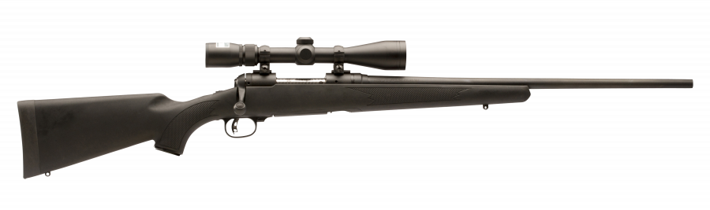
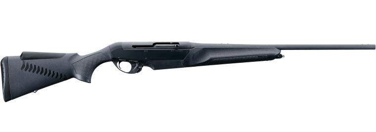
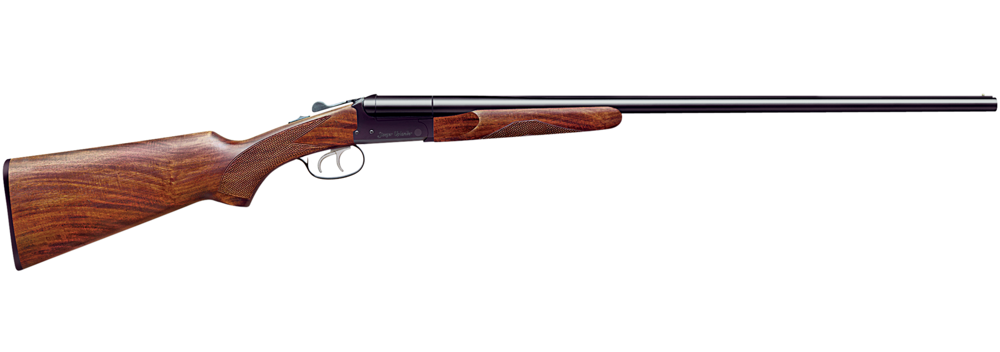
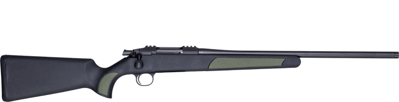

| Relva Tüüp | Kirjeldus |
|---|---|
| Poldiga Vintpüssid  | Levinud suurulukijahil, pakuvad suurt täpsust ja usaldusväärsust. |
| Poolautomaatsed Vintpüssid  | Kasutatakse tihti kiirete järeljooksvate laskude jaoks, näiteks metsseajahil. |
| Sileraudne tulirelv  | Ideaalsed linnu- ja väikeulukijahil kiirete ja instinktiivsete laskude jaoks. |
| Kombineeritud tulirelv  | Vintpüssi ja sileraudse tulirelva hübriid. |
Elutähtsa varustuse hulka kuuluvad:
Jahikoerad on jahimehe olulised kaaslased, aitavad jälitada ja taastada saaki. Koerte valik sõltub jahi tüübist: